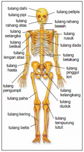
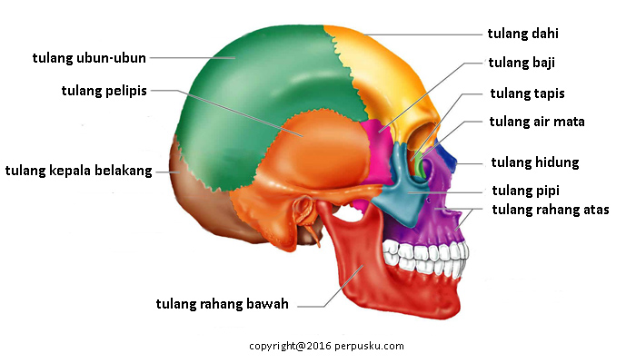
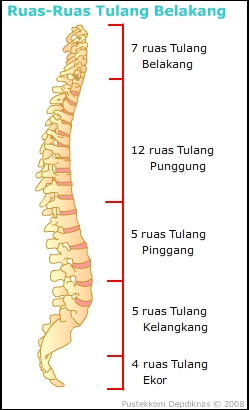
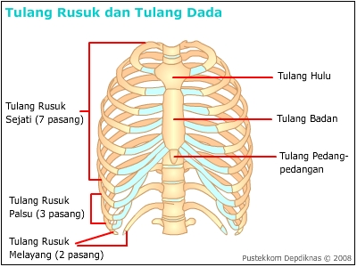
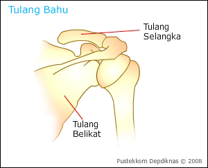
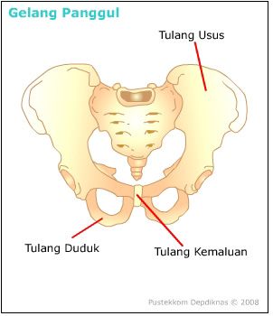
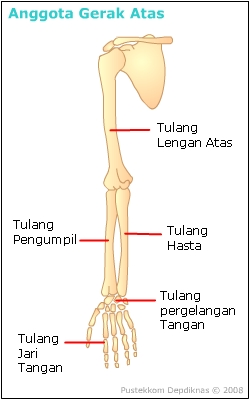
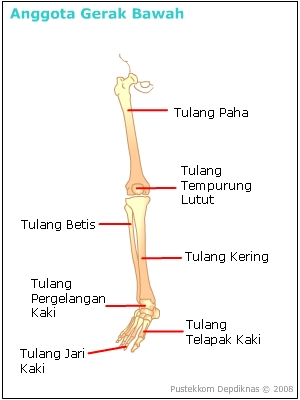

Fungsi Rangka (Skeleton)
Rangka tubuh manusia tersusun dari 206 tulang yang saling berhubungan. Dimana fungsi dari rangka adalah sebagai berikut:
Alat gerak pasif
Memberi bentuk tubuh
Menyokong tubuh
Tempat melekatnya otot
Melindungi organ-organ tubuh bagian dalam
Tempat pembentukan sel darah merah

Gambar 1. Rangka tubuh manusia dan bagian-bagiannya
Sumber: https://dosenbiologi.com
Pengelompokkan Rangka
Secara garis besar, rangka pada tubuh manusia di kelompokkan menjadi rangka aksial (skeleton aksial) dan rangka apendikuler (skeleton apendikuler).
Rangka
Manusia
Aksi
Pendekar
Rangka Aksial (Skeleton Aksial)
Terdiri atas sekelompok tulang yang menyusun poros tubuh dan memberikan dukungan dan perlindungan pada organ di kepala, leher dan badan.
Macam-macam rangka aksial
Tulang Terngkorak
Sebagian besar tersusun atas tulang-tulang yang pipih. Terdiri dari 22 buah tulang yang merupakan bagian dari tulang-tulang tempurung kepala dan wajah.
Tulang tempurung kepala, berfungsi melindungi otak, terdiri dari tulang:
Tulang ubun-ubun (parietal)
Tulang kepala Belakang (Osipital)
Tulang Tulang pelipis (temporal)
Tulang dahi (frontal)
Tulang baji (spenoid)
Tulang tapis (ethmoid)
Tl.
Tengkorak
PORTAL
SpeEdy
Tulang wajah, berfungsi melindungi mata, membentuk rongga hidung serta langit-langit, dan memberi bentuk wajah. Tulang wajah terdiri dari tulang:
Tulang rahang atas (maksila)
Tulang rahang bawah (mandibula)
Tulang pipi (zigomatik)
Tulang air mata (lakrimal)
Tulang hidung (nasal)
Tl.
Wajah
MaMa
Zilan

Gambar 2. Tulang tengkorak
Sumber: https://www.perpusku.com
Tulang Belakang
Tulang belakang berfungsi menopang seluruh bagian tubuh, melindungi bagian tubuh, melindungi organ dalam, serta tempat pelekatan tulang rusuk.Tulang belakang terdiri dari :
7 ruas tulang leher/belakang (vertebra servikalis);
12 ruas tulang punggung (vertebra dorsalis);
5 tulang pinggang (vertebra lumbalis),
Tulang ekor (koksi) dan
Tulang kelangkang (sakrum)
Tl.
Belakang
SeDot
Lemak
Kok
Sakit...

Gambar 3. Tulang belakang manusia
Sumber: https://leendarandallkhan.files.wordpress.com
Tulang dada dan tulang rusuk
Tulang dada terdiri atas tiga bagian, yaitu: hulu (manubrium), badan (korpus), dan taju pedang (xiphoid).
Tulang rusuk terdiri atas 12 pasang, yaitu: 7 pasang rusuk sejati, 3 pasang rusuk palsu, dan 2 pasang rusuk melayang

Gambar 4. Tulang dada dan tulang rusuk
Sumber: pustekkom depdiknas
Rangka Apendikuler (Skeleton Apendikuler)
Tersusun atas tulang yang merupakan tambahan rangka aksial.
Gelang Bahu
Tl Selangkang (klavikula) berbentuk huruf S
Tl belikat (skapula) berbentuk segitiga dan pipih
Bentuk
Tulang Gelang Bahu
Klas
KaKap

Gambar 5. Tulang gelang bahu
Sumber: pustekkom depdiknas
Gelang panggul
Berfungsi untuk mendukung berat badan bersama-sama dengan ruas tulang belakang, melindungi dan mendukung organ –organ bawah.
Gelang panggul terdiri atas:
Tl kemaluan (pubis)
Tl duduk (iscium)
Tl usus (illium)
Gelang Panggul PuIsI

Gambar
6. Tulang gelang bahu
Sumber:
pustekkom depdiknas
Anggota gerak atas
Tl lengan atas (humerus)
Tlpengumpil (radius)
Tl hasta (ulna)
Tl pergelangan tangan (karpus)
Tl telapak tangan (metakarpus)
Tl jari tangan (palanges)
Anggota
Gerak Atas
MeRaNa
Karna
MeLa
 Gambar 7. Anggota gerak atas Sumber : pustekkom depdiknas
Anggota gerak bawah
Tl paha (femur)
Tl betis (fibula)
Tl kering (tibia)
Tl pergelangan kaki (tarsus)
Tl telapak kaki (metatarsus)
Tl jari kaki (palanges)
Tl tempurung lutut (patela)
Anggota
Gerak Bawah
FeFi
TTM PaPa

Gambar 8. Anggota gerak bawah
Sumber: pustekkom depdiknas